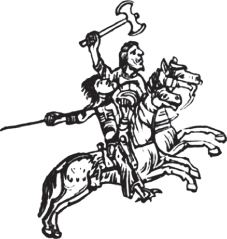

1. Варварські племена
Як у період республіки, так і за часів імперії, Рим мав багато ворогів. Та йому завжди вдавалося їх перемагати або стримувати. Тепер імперія постала перед загрозою вторгнення сусідніх народів – варварів.
Вперше римляни зрозуміли небезпечність варварів у II ст. до н.е., коли зіткнулися на північних кордонах імперії з тевтонами й кімврами. Особливо загрозливим було те, що воїни переселялися на територію імперії з дружинами, дітьми, нехитрим скарбом. Тоді Риму вдалося завдяки умілості полководців та реформованій армії зупинити просування варварів в глиб країни.
На початку нової ери найчисленнішими сусідами Риму були германці – франки, ґоти – західні (вестґоти) і східні (остґоти), сакси, англи, ланґобарди та вандали. Ці племена ще не знали держави. Органами управління у них були рада старійшин, вождь та народні збори. Рада старійшин розподіляла землю, вирішувала суперечності між членами племені тощо. У години небезпеки плем'я захищали збройні загони на чолі з вождем. Влада військового вождя трималася на авторитеті та силі. Він розподіляв землі і здобич. Вождь був рівний з іншими членами племені. Хоча були і винятки, коли вожді правили своїми племенами як справжні королі.
Германські вершники
Для набігів на прикордонні території Римської імперії варварські племена утворювали потужні союзи. Ослабла імперія змушена була укладати з варварами мирні угоди, надавати їм землі для поселення, набирати з них легіони. І навіть деякі римські полководці в цей час мали варварське походження. У другій половині III ст. почався рух величезних мас варварів, який вчені називають «великим переселенням народів ».
2. Велике переселення народів
Велике переселення народів, яке змінило карту світу і відбувалося впродовж IV-VII ст., було спричинене появою в Європі гунів. Цей могутній і загадковий народ прийшов від кордонів Давнього Китаю, здолавши десятки тисяч кілометрів. Стрімко просувалися гуни до Європи, підкоряючи території й народи і посилюючи свою могутність. Страх перед навалою гунів змушував племена, що населяли територію Європи, кидати свої землі й шукати безпечних місць. Ті, хто наважувався чинити опір, були підкорені гунами і разом з ними просувалися все ближче до кордонів Римської імперії.
У 375 p., рятуючись від гунів, дозволу оселитися у межах Римської імперії попросили вестґоти. Імператор Валент погодився надати землі у Фракії (на сході Балканського півострова) і обіцяв годувати їх якийсь час. За це вестґоти зобов'язувалися служити в римському війську. Римські чиновники порушили угоду, і варвари не отримали достатньо продуктів харчування. Потерпаючи від голоду і жахливих умов, ґоти на чолі зі своїм вождем Алавівом повстали. Проти повсталих вирушила імператорська армія. У 378 р. біля Адріанополя відбулась вирішальна битва. Римляни зазнали нищівної поразки. Серед десятків тисяч загиблих римлян були імператор Валент II і 35 трибунів. Тільки третині римського війська вдалося врятуватися та закріпитися в Адріанополі.
Кілька разів вестґоти безуспішно штурмували місто. Потім вони рушили в глиб Балканського півострова, сподіваючись на допомогу одноплемінників-легіонерів. Але один з командувачів імператорської армії – Юлій наказав убивати всіхґогів-легіонерів.
Загалом римляни, намагаючись убезпечити себе від нападів варварів, застосовували щодо них політику «поділяй і володарюй». Вони підкупали вождів племен, провокували війни між варварами, декому надавали землі в межах імперії. Усе це допомагало Риму стримувати натиск варварів. І цього разу для боротьби з вестґотами римляни найняли гунів та інші племена. Їм вдалося зупинити вестґотів і на деякий час об'єднати державу під владою імператора Феодосія. Та після його смерті держава знову розпалася. У 395 р. на теренах колись єдиної імперії утворилося дві держави: Західна Римська імперія із столицею в Римі й Східна – із столицею у Константинополі. Пізніше Східну Римську імперію почали називати Візантією – від назви міста Візантій.
3. Захоплення Риму Аларіхом
У 401 р. Західна Римська імперія вже не змогла дати відсіч вестґотам на чолі з їхнім вождем Аларіхом (бл. 370-410 рр.) і змушена була відкуплятися від варварів. А коли в 410 р. Рим відмовився платити, Аларіх 24 серпня з допомогою рабів, що відчинили вночі міську браму, захопив «вічне місто» і піддав його нищівному пограбуванню. Вестґоти три доби грабували Рим, але не залишилися в ньому, а пішли в римські провінції.
Тим часом інші варварські племена – вандали, свеви й алани захопили інші провінції колись могутньої імперії. Під владою варварів опинилися південь Іспанії, а в 429 р. – африканські провінції.
4. Вторгнення гунів
40 years after the invasion of the Visigothic tribes, tribes invaded the territory of the Western Roman Empire the Huns As early as 377, these nomadic tribes camped in the province of Pannonia. The Roman Empire held for some time Huns in submission, paying the barbarian king Ruas 159 kg of gold every year and keeping hostages.
In the 40s of the V century. Attila (?–453 BC) became the leader of the Huns. A nephew of Ruas, he was a hostage of the Romans and fine studied the life of Rome. A brave and talented commander, the Hun ruler dreamed of conquering the world. He became famous for robberies and violence, so Christians nicknamed him "the bull of God". Attila united under his power of the Hun tribe and attacked the Eastern Roman Empire first. In 447, his troops approached Constantinople and forced the emperor to pay a huge ransom.
Цікаво знати
Як розповідає легенда, одного разу в Паннонії (тепер Угорщина) до Аттіли підійшов пастух і приніс йому меч, який знайшов на пасовищі. Вождь гунів, узявши в руки меч, сказав: «Довго був у землі цей священний меч, і ось боги подарували його мені для завоювання всіх народів світу».
In 451, Attila's troops invaded the lands of the Western Roman Empire, into Gaul, and besieged the city Orleans. The Visigoths, who owned these lands, turned to Rome for help. When it seemed that the city could save only a miracle, Roman troops led by Flavius Aetius and the king of the Visigoths came to help Theodoric The siege of Orleans was lifted.
The Romans, Franks, Visigoths, Burgundians united their forces to repel a powerful enemy. alans, Saxons The decisive battle between the allies and the Huns, on whose side the Ostrogoths and Sarmatians stood, took place on west of the city of Troyes, in the Catalaunian fields. Sometimes this battle is called the "battle of nations." She was alone with the bloodiest battles of ancient times in Europe. About 62,000 soldiers died in it. Thanks to courage Visigothic King Theodoric and the steadfastness of the Roman infantry, the battle was won. The defeated army of Attila left the borders Roman Empire. In 453, Attila died after his own wedding. His state collapsed.
Велике переселення народів. Загибель Західної Римської імперії
5. Падіння імперії
The Western Roman Empire, which survived the war with the powerful Huns, was soon attacked by the Vandals from the territory of North Africa , where they created a powerful state, led by King Geiserich . Captured island Sicily, the Vandals turned it into a convenient springboard for an attack on Rome. In 455 they took once the impregnable capital of the Western Roman Empire for enemies. For two weeks they plundered and destroyed Rome. Thousands residents of the "eternal city" died defending their homes, thousands were turned into slaves. It was destroyed the cultural achievements of many generations of peoples of the empire, the architectural grandeur of proud Rome was destroyed, lost masterpieces of art. Since then, the concept of "vandalism" has been used when it comes to something senseless cruelty and destruction of cultural property.
But Rome was not finally defeated. In 468, the Roman fleet, which consisted of 1,100 ships, met off the African coast with Geiseric's naval forces. Taking advantage of the mistakes of the Romans and applying incendiary vessels, vandals won.
З того часу західнаримські імператори вже не мали реальної влади. Їх контролювали варварські вожді. Символічно, що останній імператор, як і легендарний правитель Риму, мав ім'я Ромул. У 476 р. Ромула Августула позбавив влади вождь остґотів Одоакр, а символи його влади відправив до Константинополя.
Тисячолітній Рим упав, а Західна Римська імперія зникла з карти світу. На її території утворилася велика кількість варварських королівств. Традиційно рік падіння Західної Римської імперії вважають закінченням історії стародавнього світу. Але життя тривало, почався новий період в історії Європи – середні віки.